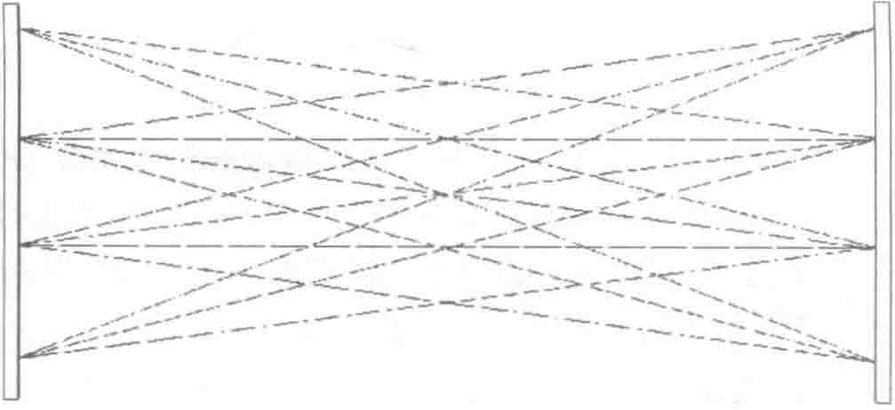

系统的防区的布防和撤防操作。在受理报警事件时，提供声光信号指示报警事件的发生。
入侵报警主机能设定分时段设防和撤防，可与视频安防监控系统联动，启动摄像机对现场情况进行录像。
该系统可与各数据中心的其他弱电子系统集成，实现统一管理。同时，该系统还预留有与当地110报警中心联网的接口。
入侵报警系统通常包括两个部分，即防盗报警系统和周界防范报警系统。防盗报警系统和周界防范报警系统都使用同款报警主机和管理软件。
这两个系统都是采用技术手段对非法入侵进行探测并向安保人员报警，区别在于防盗报警系统主要是针对建筑物内部，而周界防范报警则是针对一个区域的周界。前者防范的是一个区域，而后者防范的是一条连续的线。
在数据中心建筑内部，微波/红外双鉴探测器是最常用的前端报警探测设备。双鉴探测器布置在机房层入口，探测器连接到地址模块后以RS485总线方式连通到安全防范管理中心的报警主机上，报警主机通过TCP/IP接口接入安全防范网络，由报警系统管理工作站实现监控中心对报警系统的集中管理。
2. 入侵探测装置的种类
入侵探测装置主要有以下几种类型：主动红外入侵探测器、被动红外入侵探测器、微波入侵探测器、微波和被动红外复合入侵探测器、超声波入侵探测器、振动入侵探测器、音响入侵探测器、磁开关入侵探测器、超声和被动红外复合入侵探测器等。从以上这些探测器的技术原理来看，都是通过探测人体入侵时，对环境中的“声、光、电、磁、热”等物理量造成的影响，来间接探测入侵情况的。
（1）主动红外入侵探测器
红外探测器是一种辐射能转换器材，它主要通过红外接收器将收到的红外辐射能转换为便于测量或观察的电能和热能。根据能量转换方式不同，红外探测器可分为光子探测器和热探测器两大类，即平常所说的主动式红外对射探测器和被动式红外探测器。
主动式红外对射探测器又称为光束遮断式感应器，由一个发射器和一个接收器组成，一般用于周界防范场合，其组成示意图如图6-11所示。
